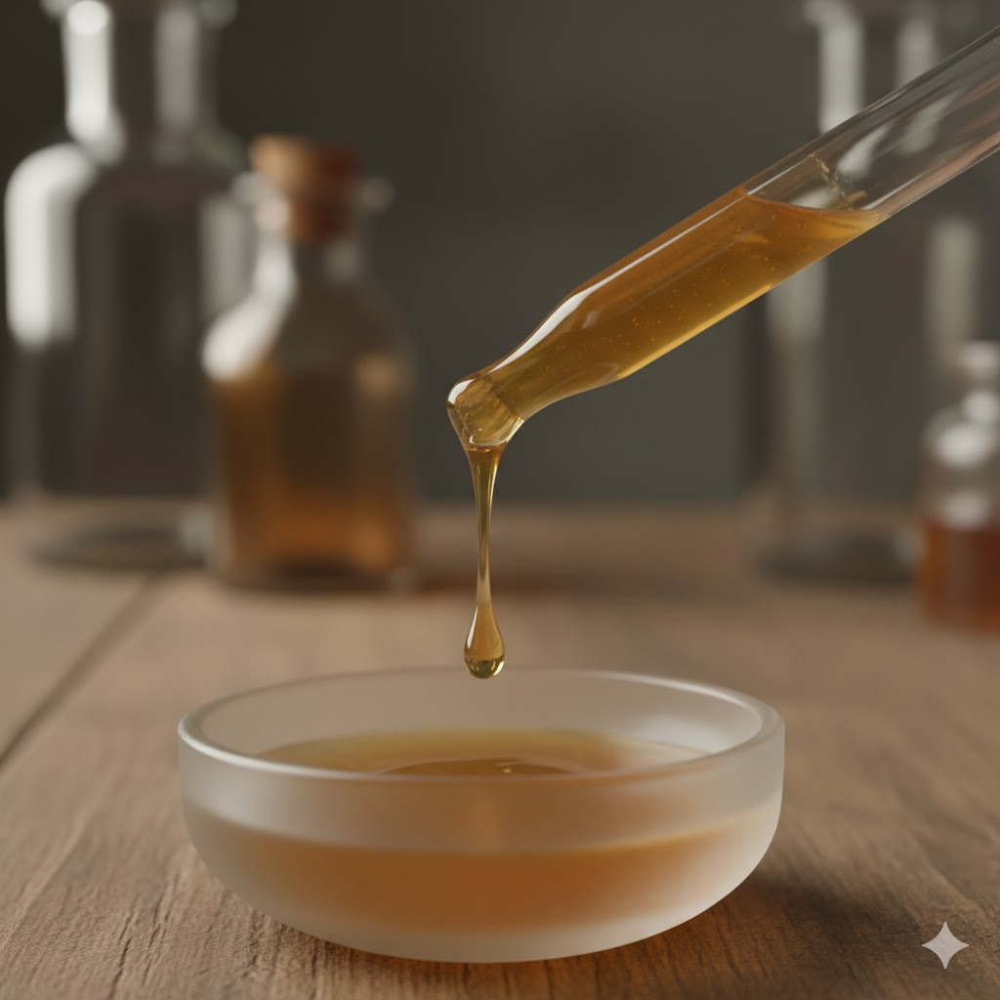

L'Anima Nascosta dei Dolci: Un Viaggio nella Storia, Cultura e Alchimia Culinaria della Vaniglia
Pochi aromi al mondo sono così onnipresenti e, allo stesso tempo, così fraintesi come la vaniglia. È il filo dorato che attraversa il tessuto della nostra memoria culinaria, l'aroma per eccellenza di creme, gelati e torte.La vaniglia è, al contempo, il profumo universale del comfort food e una delle spezie più costose e preziose del pianeta, seconda in valore solo allo zafferano La vaniglia non è un seme o una radice qualsiasi; è il frutto dell'unica orchidea commestibile tra le oltre 20.000 varietà conosciute.
Le Origini Mitiche
La storia della vaniglia inizia con il popolo Totonachi, che abitava le foreste tropicali di Veracruz, nell'odierno Messico.Per i Totonachi, questa pianta non era un semplice ingrediente, ma un dono divino intriso di una mitologia potente. Una leggenda narra che la vaniglia sia germogliata dal sangue della principessa Xanat dopo essere stata decapitata dal padre per essersi innamorata di un mortale. Per questo fin dalle sue origini, la vaniglia è stata associata al desiderio proibito e al sacrificio.
Con gli Aztechi la vaniglia era l'ingrediente chiave per aromatizzare. È fondamentale notare che la vaniglia non era usata per il suo sapore primario, ma per la sua capacità di bilanciare e addolcire l'intrinseca amarezza del cacao.
La Grande Illusione: Vaniglia Naturale vs. Vanillina Sintetica

Il costo esorbitante e il processo di coltivazione e lavorazione incredibilmente laborioso della vaniglia naturale (che richiede l'impollinazione manuale di ogni singolo fiore e mesi di stagionatura) hanno portato l'industria a cercare un sostituto. Questo sostituto è la vanillina sintetica , un composto chimico spesso derivato come sottoprodotto dell'industria cartaria (dalla lignina del legno). La vanillina sintetica ha un sapore riconoscibile, ma è unidimensionale. La vaniglia naturale, al contrario, è un'oleoresina , una miscela organica complessa che contiene centinaia di composti aromatici oltre alla vanillina.
Il Cuore Alchemico della Pasticceria
Il ruolo più importante della vaniglia in un dolce non è dare sapore di vaniglia. Il suo ruolo è esaltare tutti gli altri ingredienti. La vaniglia agisce come un architetto invisibile del gusto. Dà struttura, rotondità e profondità. Fa emergere le note fruttate, bilancia l'acidità, è la spina dorsale invisibile di impasti, paste frolle, creme e gelati. Non tutta la vaniglia è uguale il luogo di origine, il clima e le specifiche tecniche di lavorazione crea profili aromatici radicalmente diversi. Scegliere il baccello giusto può trasformare un dolce da buono a sublime.
| Varietà (Specie Botanica) | Origine Principale | Profilo Aromatico Chiave | Note Secondarie | Usi Culinari Ideali |
|---|---|---|---|---|
| Bourbon (Vanilla Planifolia) | Madagascar (Regione SAVA), La Réunion | Dolce, cremoso, zuccherino, ricco di vanillina | Note floreali delicate, cioccolato, rum, uva passa | L'Universale: È il sapore classico di "vaniglia". Perfetta per creme (pasticcera, inglese), panna cotta, gelati, torte, impasti base, frolle e cioccolato. |
| Tahiti (Vanilla Tahitensis) | Polinesia Francese (Tahiti) | Intenso, floreale, delicato. | Anice, frutta (meno vanillina ma più complessa) | Il "Gourmet": Ideale per pasticceria fine, cioccolateria e gelati gourmet. I suoi aromi sono più volatili, quindi è superba in preparazioni a freddo (mousse, ganache) per preservarne il profumo. |
| Messicana (Vanilla Planifolia) | Messico (Veracruz) | Complesso, note di bosco, "gourmet" | Cacao, prugna secca, frutta secca, note tostate e speziate | L'Originale: Il suo profilo complesso e speziato è l'abbinamento perfetto per il cioccolato (richiamando le origini Azteche), creme ricche e persino piatti salati. |